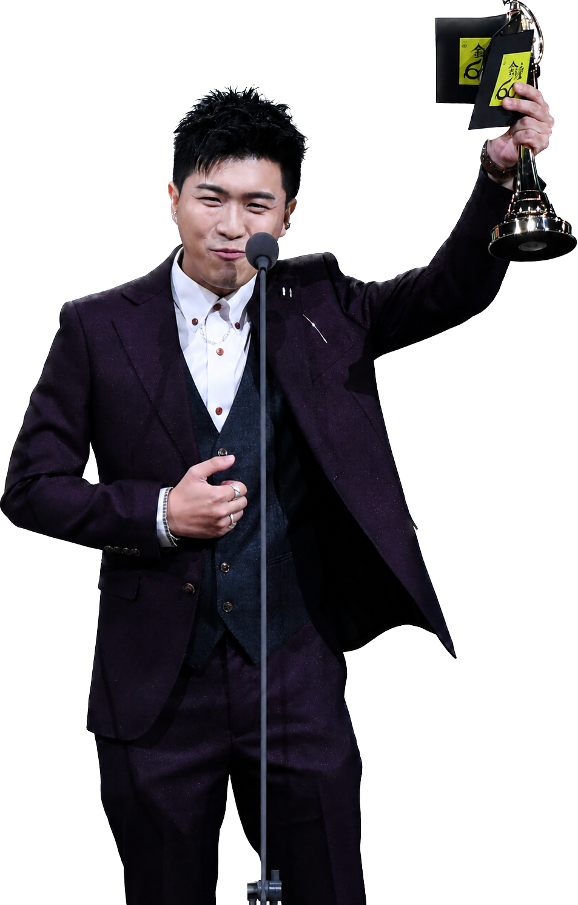

「似乎我的每個感受那些主持人都懂。」戴上耳機，亨利（化名）彷彿打開一扇通往空中的大門，耳機內悠悠傳來Podcast節目主持人閒話日常與笑聲，「就像老朋友在跟我聊天。」這股熟悉感，填補他一日裡獨自感到疲憊的時刻。
「我最近分手，常常覺得特別寂寞。」亨利坦言，「但現實生活中朋友不可能永遠都有空陪你。」 當他自己一人出門，卻突然想要找人說話時，他就會找熟悉的Podcast收聽。他表示，即使和主持人身處的時空不同，Podcaster在節目中揭露自己過去較黑暗、隱私的情緒和經驗，反而能提升他對他們的信任，拉近彼此間的距離，亨利也分享平常他愛聽《劭中胤翔》，「他們的心得讓我覺得很有共鳴。」當他遇到生活難題時，他會參考Podcaster提出的建議。聽眾Lauren（化名）亦分享，每次聽到別人有類似經驗時，「好像自己的內心被安撫到了。」
聲音媒介打破時空限制 成為年輕聽眾的新選擇
國立政治大學廣播電視學系教授黃葳威指出，聽眾在收聽Podcast時具有自主性，可以選擇播放的速度和集數，而收聽過程中「低社交需求」的特性也成為其迷人之處，「它好像成為一個很忠實的朋友，一直都在你旁邊，但是不干擾你。」諮商心理師海苔熊（化名）亦說明，Podcast具有「穩定更新」和「可重複收聽」的兩項性質，能夠給予聽眾缺乏的陪伴。而諮商心理師杜珝萌則從依附理論的角度解釋，聽眾可能在收聽時產生「原來世界上有人跟我擁有相同」的想法，或者聽眾渴望收聽Podcaster分享他們所欠缺的生命經驗，兩者皆容易讓聽眾跟Podcaster產生連結。
收聽Podcast的年齡分佈
而亨利也認為，因為戲劇會預先撰寫好腳本，相比之下，Podcaster在節目中的互動方式自然且真實，因此當他感受到寂寞時，他傾向從Podcast中尋求溫暖。Amanda（化名）則分享自己在失眠時會聽《台灣最好睡的Podcast》助眠，他表示，「如果是用YouTube，我可能會被其他影片分心。」Podcast相較YouTube，其僅有聲音、沒有畫面的特性，讓聽眾反而可以更專注在Podcaster的聲音呈現方式。
從日常陪伴發展形成影響力 Podcast成為心靈支柱
Podcast的影響力，往往從節目融入聽眾的日常生活開始。由劇場演員皓嵐（化名）、原慶（化名）共同主持的《善嵐慶女》節目內容圍繞如拜拜、星座等生活大小事，皓嵐形容它是「陪伴感很強」的節目。依兩人觀察與後台數據，節目聽眾年齡多落在25歲至40歲之間，並以女性、男同志為主。皓嵐認為，節目氣質會吸引對應的受眾，「不同的Podcast節目養出來的聽眾會跟主持人很像。」基於這種相似性，加上長期聆聽節目，聽眾逐漸對主持人產生信任感。皓嵐提到，聽眾常透過私訊Instagram等社群，把他們當成「樹洞」，分享自己在身心狀況不佳、失去父母等黑暗時刻，如何靠著節目的陪伴暫時撐過現實；原慶則記得，有聽眾在美國生活將近一年，透過節目排解鄉愁；也有聽眾在徒步行走西班牙「朝聖之路」期間，靠著收聽節目撐過漫長旅程。皓嵐說，做節目時從未想過，自己的聲音有天能成為「空中支持的力量」。
除了主持人角色的改變，收聽Podcast的情境，也進一步拉近聲音與聽眾身體之間的距離。內克觀察，廣播過去常仰賴清楚咬字與較誇張的聲音表情，因為聲音多半經由車用廣播、收音機傳出，和聽眾之間存在距離；但Podcast多透過耳機收聽，聲音更加貼近身體，若主持人過度表演，反而容易讓聽眾覺得不真實。此外他認為，Podcast之所以更容易建立信任，正在於它能讓人有脈絡地聽完一段想法或情緒，「我們常說聲音是一個很深情的媒介，它親密性很高。」
諮商心理師胡安然（化名）則以心理學中的「客體關係理論客體關係理論（Object-Relations Theory）：源自精神分析理論，指一個人內在精神的人際關係型態模式。」，解釋這種親密感如何形成。他指出，人們在成長過程中，皆需要不同形式的「客體」作為心理依靠；早期的重要客體可能是父母，成年後則會逐漸轉向其他人，「偶像、明星，或是特定的主持人，也可能成為其中一種。」這些客體可能承載共同感受與共同立場，抑或是代表人們理想中的自我樣貌。而Podcast主持人長時間陪伴聽眾、持續分享觀點，亦可能在此過程中成為重要的心理客體。胡安然說明，「當主持人與我們之間有某些特定的共同性，我們就會傾向與他連結，並且把他內化成自己的一部分。」
也正因如此，Podcaster不只是傳遞資訊的人，其語氣、觀點與生命經驗，都可能成為聽眾投射情感的依據。而當這種信任逐漸形成，Podcaster如何揭露自己，便成為影響力能否延續的關鍵。
「真實感」的背後 Podcast節目的設計思維
杜珝萌指出，Podcast中的自我揭露之所以容易打動聽眾，與團體治療中的普同感普同感（universality）：團體心理治療中的療效因子之一，指個體在他人相似經驗中，意識到自身困境並非孤例。有關。當主持人在節目裡說出失戀、低潮、家庭創傷或其他難以啟齒的生命經驗時，聽眾可能因此感覺「原來不是只有我在經歷這種痛苦」。他也提到，這類分享還牽涉到存在性因子存在性因子（existential factors）：團體心理治療中的療效因子之一，指個體覺察自由、孤獨、死亡等限制，並承擔自身責任。：聽眾不只是在聽別人的故事，也是在觀看他人如何面對生命中可怕、討厭或難以承擔的議題，並從中看見希望。
然而，越要讓聽眾覺得自然，Podcaster越需要判斷哪些情緒可以留下，哪些段落必須剪掉，哪些自我揭露能推進對話，哪些只是情緒宣洩，因此真實感不代表毫無設計。皓嵐表示，兩人在節目中分享的故事皆是親身經歷，不會刻意為了效果編造；原慶也補充，若聽眾覺得誇張，「那都是我們的本性。」即使如此，他們設計訪綱時，會思考每集如何帶入氣氛、起承轉合與結尾，只是題材大多仍從生活出發。內克甚至認為自我揭露「有點企圖性」，他舉例，主持人的揭露不能只是「我最近有點沮喪」，還要說出自己走過的路、得到的體悟；但揭露的目的仍落在聽眾身上，「我的自我揭露能不能引起共鳴？」
他們如何拿捏講故事的分寸？

「節目類型會影響我如何去引導以及判斷自我揭露的比例。」內克表示，若是由多人共同主持的Podcast節目，經常會有各自不同的任務分配，例如：有人負責拉主key、有人插科打諢、也有人需要適時提出觀點。這些角色上的分工未必會被聽眾明確察覺，卻會影響每位主持人揭露私人經驗的占比。
他指出，生活雜談型節目尤其仰賴自我揭露。若主持人分享得不夠多、不夠具體，聽眾可能會覺得內容「浮浮的」，節目效果也會被順帶削弱。然而，不同Podcast節目的做法仍各有差異，腳本感強的節目通常更偏向知識傳遞，所以情感交流的比例較低；聊天型節目的腳本則多採列點式，不一定會讓搭檔事先知道所有的細節。
內克舉例，若節目要談「低潮」，主持人可能只會先告訴搭檔：「今天的節目主題是要分享低潮，因為我最近剛度過一個很大的難關。」剩餘細節則必須留到錄音時才說，確保彼此對話時能有最自然的火花。他提醒，若主持人連「低潮的原因是交往10年的另一半偷約砲」等細節都提前寫在腳本上，錄音時便很難出現良好效果，「如果對方早就熟知了整個故事，你還能期待對方會給你什麼反應？」他說，這樣的互動也容易讓聽眾覺得不夠真實。
主持人Vivi・Ryan・Terry
Podcast《指南錄一段》由主持人Vivi、Ryan、Terry共同主持，節目以Z世代視角出發，採閒聊形式分享自身經驗與對議題的看法。Vivi表示，三人背景、性別不同，共同話題未必很多，因此才會選擇以Z世代作為切點，「我們好像最大的共同點就是這個。」Ryan指出，目前節目播出至第七集，聽眾以18至34歲為主，其中23至27歲最多；從反應來看，感情相關集數討論度較高。
談及主持人自我揭露的界線，Terry表示，節目錄製時三人多半會先自然的聊天，聊的內容是他們幾人感興趣的話題，後續在剪輯階段時便會判斷談話內容是否適合保留與公開。Vivi補充，三人也會事先建立好共識，若某些話題是特定主持人不願意公開談論的內容，錄製時便會特別避開。
除了自我揭露的尺度問題，三位主持人也會因節目而調整自己的說話方式。Vivi表示，自己在節目中會更注意說出口的句子是否完整，若表達得太鬆散，就會重新組織言語，方便後續的剪輯；在錄音時的他也會比平常更外向、更愛笑，「就是比較有節目效果的感覺。」
其他Podcaster也有類似的思維。《指南錄一段》主持人Ryan（化名）會思考故事怎麼講更吸引人，是否加入吐槽或笑話；另一位共同主持Terry（化名）則說，自己在節目上會更認真聽別人說話，思考如何提問。《傷心酸辣粉》主持人大豆（化名）也表示，他不會為點閱編故事，後製時若發現情緒太滿、太自溺，就會剪掉，因為他想分享的是「我們一起走過的坑」，而非把傷口撕開供人觀賞。這些看似自然的聊天，其實都帶有對節目節奏與情緒分寸的意識。
當陪伴累積成信任 創作的責任與界線
Podcast能提供情緒安慰，但當節目被反覆收聽、主持人的話逐漸累積成信任，其影響也隨之擴大。諮商心理師海苔熊指出，由於現代人長時間活躍於網路，線上人際互動的品質會影響個人線下生活滿意度與心情。換言之，Podcast所提供的陪伴，並不只停留在收聽當下，也可能進一步影響聽眾理解自我、處理情緒與建立關係的方式。
PODCAST ・ RISK
隱憂
Podcast陪伴的三種潛在危機
若聽眾對Podcast節目的依賴過深，諮商心理師吳至潔認為，可能存在三大隱憂：
01 聽眾把暫時舒緩誤認為療癒
「當一個人聽完一集談失戀療癒的Podcast，感覺好多了，但那種『好多了』的感覺，在心理學上更接近情緒的暫時轉移，不一定是真正的療癒。」吳至潔形容，聽Podcast像是吃止痛藥，「它能很快速、即時地緩解你當下的情緒疼痛」；心理諮商則像是「物理治療」或「開刀」，過程可能痛苦，卻能處理更深層的問題。
她也指出，若一個人已出現持續憂鬱、強烈自傷念頭、創傷後壓力症狀等狀態，就需要專業介入。若只依賴Podcast，就像骨折的人因按摩後感覺好一點，便沒有照X光、打石膏，等到真的走不動時，傷口可能更難處理。
02 聽眾可能困於情緒同溫層
「第二個隱憂是，聽眾可能會不小心把自己困在『情緒的同溫層』裡。」吳至潔表示，在諮商室中，心理師同理當事人後，會在適當時機「溫和地推你一把」，協助看見盲點；但Podcast是單向的，選擇權完全在聽眾手上。若一名對工作充滿憤怒的年輕人，每天只聽抱怨慣老闆的節目，雖然情緒當下被接住，長期下來卻可能持續站在「受害者」位置，不斷反芻負面情緒，削弱現實中解決問題或自我成長的動力。
03 節目內容無法回應個別處境
「Podcast無法處理『個別性』。」吳至潔認為，諮商之所以有效，核心原因之一是它「為你一個人設計」。諮商師會根據個案的成長背景、依附風格與當下狀態，做出個別化判斷與介入；同樣是失眠焦慮，不同人需要的處理路徑可能完全不同。
吳至潔提醒，Podcast面向的是所有聽眾，「一句『你要學會放下』不一定適用所有人。」當一個人發現自己只能依賴某個聲音才能入睡，或聽了再多節目，現實中的痛苦仍未減少時，也許就是該拿下耳機，走進真實關係或諮商室的時候。
當線上陪伴逐漸養成信任，創作者說出口的每一句話，都可能對聽眾造成影響。世新大學口語傳播暨社群媒體學系專任教授葉蓉慧也指出，許多Podcaster並非傳統媒體工作者，創作時可能只從自身經驗出發，未必意識到社會責任。她說：「現在Podcast很多時候就是素人，他就單純只是講他自己的想法，沒有去考慮到他的社會責任。」她也提醒，Podcaster的資訊來源通常難以確認，節目中的看法也不一定適合每一位聽眾。聽眾E小姐（化名）便舉例，有些節目中的發言，聽起來更像朋友私下聊天時會出現的評論，搬到Podcast上公開播出未必妥當。
聽到反感或不適當的內容
於是，關鍵不只在於外部規範是否足夠，也回到創作者如何看待自身逐漸擴大的影響力。皓嵐表示，當意識到自己「成為小小的公眾人物」後，便明白必須承擔相應的社會責任，發言也更加謹慎。內克也坦言，當聽眾開始依賴節目，甚至把主持人的話當成重要參考，「我會覺得這是一件危險的事」。在他看來，自媒體創作者一旦擁有影響力，就更要提醒聽眾，主持人的觀察有限，不能完全採信單一論點。
他們如何看待自己的影響力？
皓嵐指出，身為主持人的社會責任不會太過限制他們該怎麼講話，「更重要的是我們應該從日常生活中開始感知，明白自己是個擁有什麼樣價值觀的人。」他補充，主持人會思考如何在實踐社會責任的同時，給予聽眾更多「好的影響」。不過，這並非意味著他們要主動教導聽眾大道理，而是會透過分享生活經驗，以及生活中遇到的「一些鳥事情」，讓聽眾了解他們是以什麼心態去面對困難。皓嵐認為，在分享經驗的過程中，也許能讓聽眾產生「原來我們也可以這樣轉念」的新思路。

皓嵐
「像我的話，很多時候會向大家分享我的戀愛經驗。」原慶表示，自己在節目中經常分享個人經歷，但由於談話內容是在公眾平台上發表，因此他認為，主持人仍必須有足夠的判斷能力，去分析「哪個該講、哪個不該講」。
他進一步指出，所謂不該講的內容，很多時候並不是害怕聽眾透過這些內容而知曉自己的秘密，而是因為當主持人在公開平台上說出自己的價值觀後，它就會成為一種可被大家隨時接收的價值觀。隨後，聽眾便有可能因為這些言論而開始相信某件事。
他坦言，自己不希望因為個人經驗，而讓聽眾對某些事情形成絕對判斷，「我不想要因為我的經驗，去讓別人因此做出什麼絕對的改變。」原慶也強調，「當然我不是說我的影響力很大，只是說我會比較小心翼翼去處理這部分的議題。」
其中，心理與創傷相關內容尤其需要更高的敏感度。諮商心理師吳至潔認為，Podcaster在製作創傷或自傷相關內容時，應避免過度描述細節，也不應將特定行為浪漫化。他說：「這些原則本來是給媒體記者的，但我認為Podcaster同樣需要了解。」杜珝萌也提到，Podcaster除了加上基本警語，也可提醒聽眾尋求其他支持，「心理諮商未必是唯一的資源（支持方式），有些人可以是一趟旅行，或者是去跟他信任的親朋好友談一談，這些自我照顧的方式也是Podcaster可以提醒的。」
但單靠創作者自律仍不足以建立完整的安全網。諮商心理師楊舒雲指出，Podcast平台可在相關節目頁面附上衛生福利部安心專線1925、生命線1995、張老師1980等專業資源，並明確提醒聽眾，節目內容不能取代專業協助，他說：「這樣一句簡單的提醒，可能就會讓某個正在猶豫的聽眾真的拿起電話。」另外，沈宗倫也建議，Podcast產業應建立法律之外、眾人能共同遵守的產業慣例，而非僅由各平台各自推出獨立規範。
如果某個Podcast長期陪你度過低潮，你會怎麼看待它給你的建議？
這一題關於陪伴與界線：聲音可以安撫人，也可能讓人過度依賴單一觀點。
Podcast的安撫， 也要幫人重新回到生活
「雖然我還是渴望有一個真實的人陪我啦！」亨利笑著說道，在他看來，這個時代裡，孤單和寂寞似乎變得愈漸普遍，人們卻未必有餘裕全心陪伴彼此；Podcast提供一種無壓力的陪伴，也讓渴望連結的人暫時找到歸屬。「我想，Podcast會在這個時代這麼流行，可能也是因為這樣吧。」亨利總結道。